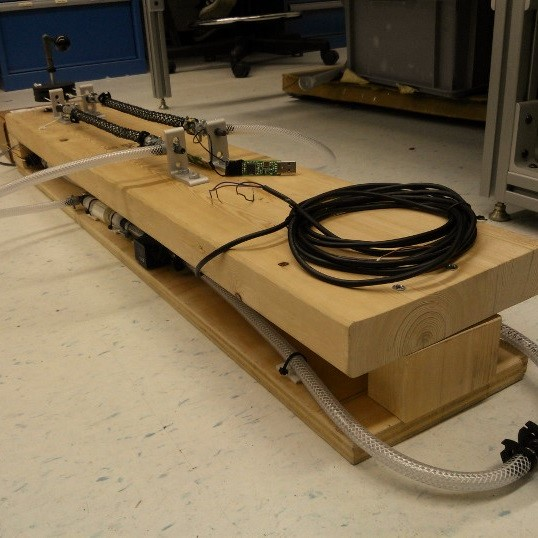
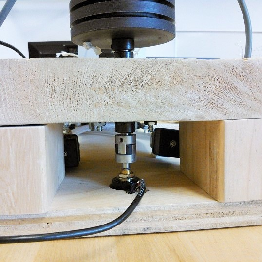
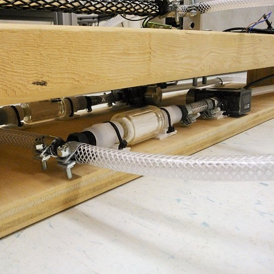
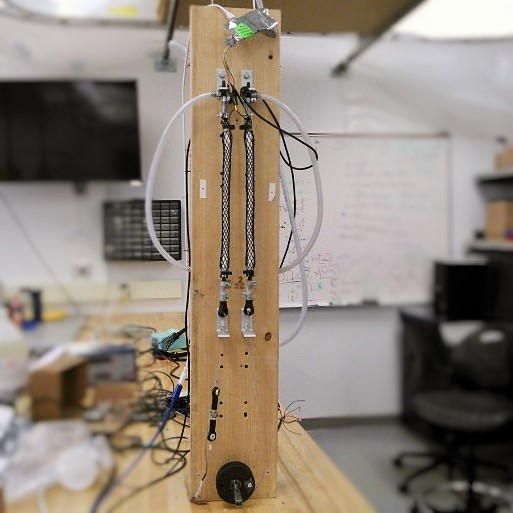

Robotics and Motion Laboratory (RAMlab)
Undergraduate Student Research Assistant
I joined the Robotics and Motion Laboratory (RAMlab) from November 2014 to June 2016, beginning when I expressed my interest to work in the lab for a research course for the Winter 2015 semester. Together with PhD mentor Wyatt Felt, we worked to create a Smart Braid that effectively senses contraction of the McKibben artificial muscle that it wraps.
Background
My work at the RAMlab involves developing a novel sensing method designed by PhD student Wyatt Felt. This novel sensor, called the Smart Braid, is aimed to provide sensing for actuators where conventional sensors could not, such as soft actuators like the McKibben artificial muscle or at compliant joints.
McKibben Artificial Muscles are simply pneumatic actuators that work by contracting after intake of compressed air to provide linear actuation. However, sensors that are robust and effective has yet to be succesfully implemented on these actuators, which is a major obstacle for feedback control.
The Smart Braid uses a fundamental electrical property: inductance, to measure the contraction length of the McKibben artificial muscle that it wraps. As the muscle contracts, the braid contracts with it, increasing in cross sectional area with the braid fibers aligning closer to each other. This causes a change in inductance, and by characterizing the change of inductance to contraction length, we managed to create a Smart Braid that senses contraction effectively.
My Work and Experience
   I started on the project with Wyatt to learn about the McKibben artificial muscles and the novel sensor. I was involved heavily with the implementation of the project, from building test benches and sensors to code writing for data analyses. In the early stages, I braided some Smart Braid sensors, which were then used to characterize their inductance based on contraction length. I also designed and built a test fixture to allow antagonized testing of the Smart Braid on the muscles (first picture from left), which were made with blocks of wood, 1/4" PVC hoses and 80-20 aluminum brackets from McMaster-Carr.
During Summer 2015, I worked mostly on achieving feedback control with the Smart Braid, and from then onwards we moved to improving sensor design processes as well as trying a different actuator configuration. We used the data obtained from the test fixture to calibrate and predict the inductance-contraction and force-pressure relationship with Matlab. Using LabVIEW, I designed and modified the Virtual Instruments (VI) with Wyatt's guidance to allow feedback control as well as to improve functionality of the LabVIEW controller.
The novel sensor won first place in the Soft Robotics Toolkit 2015 Prize for Contributions in Soft Robotics Research. Our work was presented at the Fluid Power Innovation & Research Conference (FPIRC) 2015, while our article 'Contraction Sensing with Smart Braid McKibben Muscles'was published in the IEEE Transactions on Mechatronics journal, vol. 21 issue 3. Our poster on the Smart Braids was also displayed during the Dynamic Walking 2016 conference.
I've gained a lot of experiences from the lab working with softwares like MATLAB and LABview, as well as hardware knowledge. During the summer, we encountered noisy signals frequently from our potentiometer, which gave me the chance to learn how to solve it. One of the effective ways of analyze noisy data that I learnt and used, was the moving average filter, which allowed us to characterize cleaner data. Afterwards, we shifted to an incremental encoder to solve the problem of noise, which was especially problematic to use in PID control. Besides, I also familiarized myself in utilizing digital hardware, when I learnt to communicate with the Texas Instrument LDC1614 Inductance to Digital Converter using LabVIEW.